Featured Publications
Discover key scientific findings and methodological innovations from our team.
Frequency Selective Neuronal Modulation Triggers Spreading Depolarizations in the Rat Endothelin-1 Model of Stroke
Abstract: Ischemia is one of the most common causes of acquired brain injury. Central to its noxious sequelae are spreading depolarizations (SDs), waves of persistent depolarizations which start at the location of the flow obstruction and expand outwards leading to excitotoxic damage. We investigated the role of peri-injection zone pyramidal neurons in triggering SDs by optogenetic stimulation in an endothelin-1 rat model of focal ischemia. Our concurrent two photon fluorescence microscopy data and local field potential recordings indicated that a ≥ 60% drop in cortical arteriolar red blood cell velocity was associated with SDs at the ET-1 injection site. SDs were also observed in the peri-injection zone, which subsequently exhibited elevated neuronal activity in the low-frequency bands. Critically, SDs were triggered by low- but not high-frequency optogenetic stimulation of peri-injection zone pyramidal neurons.
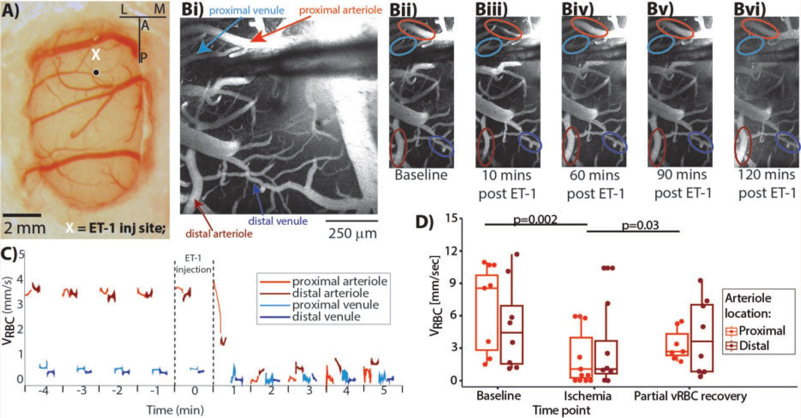
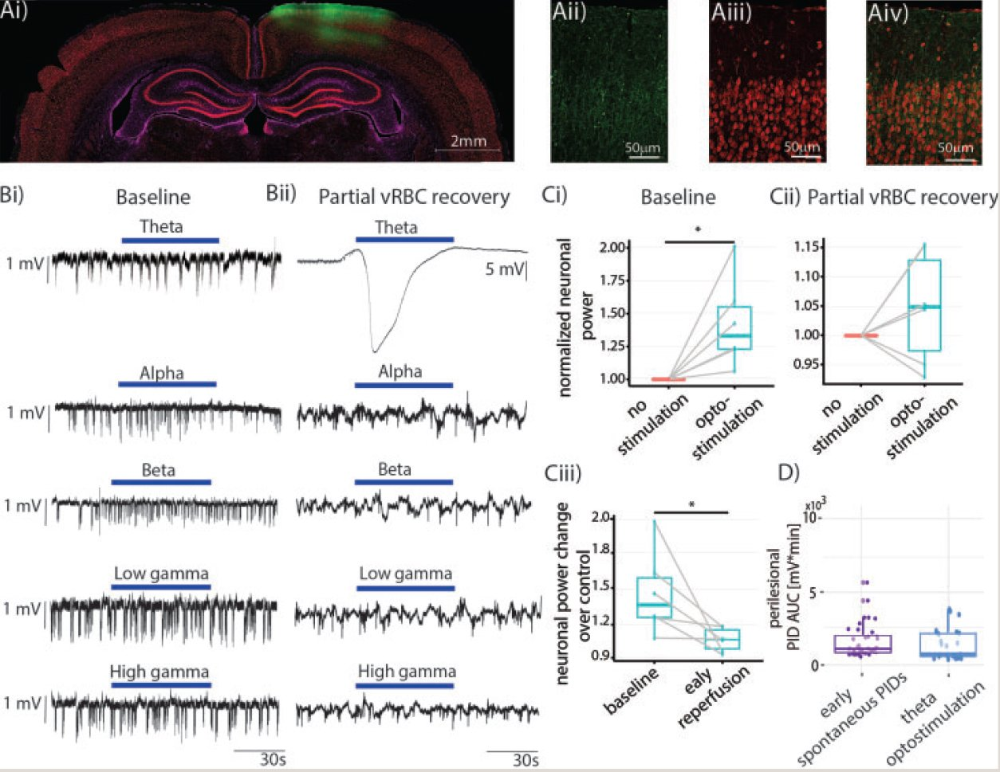
Attenuation of Tonic Inhibition Prevents Chronic Neurovascular Impairments in a Thy1-ChR2 Mouse Model of Repeated, Mild Traumatic Brain Injury
Abstract: Mild traumatic brain injury (mTBI), the most common type of brain trauma, frequently leads to chronic cognitive deficits. To elucidate its pathophysiological sequelae, we combined optogenetics, two-photon microscopy, and intracortical electrophysiology in mice to stimulate peri-contusional neurons weeks following repeated closed-head injury. Compared to shams, mTBI mice showed doubled cortical venular speeds and strongly elevated reactivity, while peri-contusional neurons exhibited attenuated spontaneous activity. Post-mortem immunofluorescence revealed signs of peri-contusional senescence and DNA damage. These alterations were largely prevented by chronic, low-dose, systemic administration of a GABA-A receptor inverse agonist (L-655,708), commencing 3 days following the final impact.
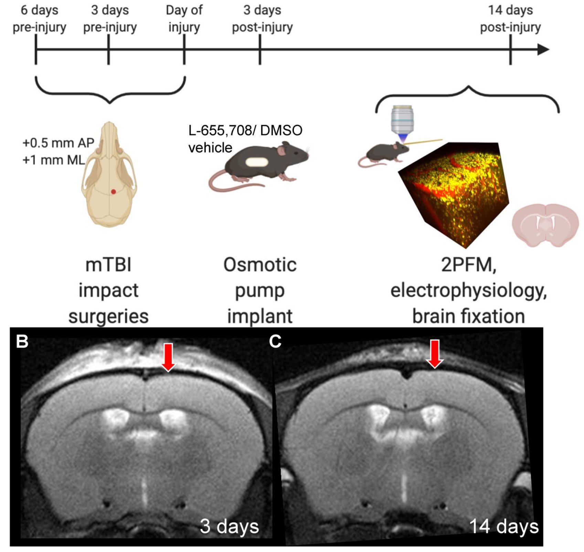
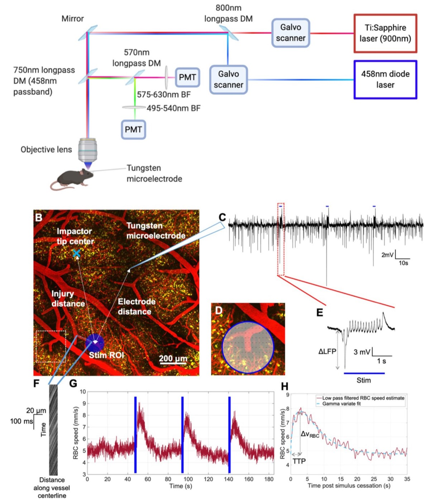
Combinatorial Treatment Using Umbilical Cord Perivascular Cells and Aβ Clearance Rescues Vascular Function Following Transient Hypertension in a Rat Model of Alzheimer Disease
Abstract: Mid-life transient hypertension is a risk factor for Alzheimer's disease (AD). We used arterial spin labeling MRI to longitudinally assess brain vascular function and immunohistopathology to examine cerebrovascular remodeling and amyloid load. Hypertension was induced for 1 month by L-NAME in TgF344-AD rats at the prodromal stage. Following hypertension, nontransgenic rats showed transient changes, whereas TgF344-AD animals exhibited sustained vascular deficits. Human umbilical cord perivascular cells (HUCPVCs) in combination with scyllo-inositol (inhibitor of Aβ oligomerization) normalized hippocampal vascular function and remodeling, in contrast to either treatment alone.
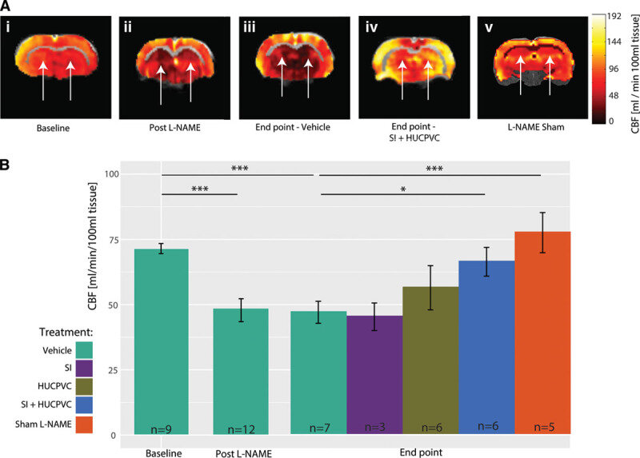
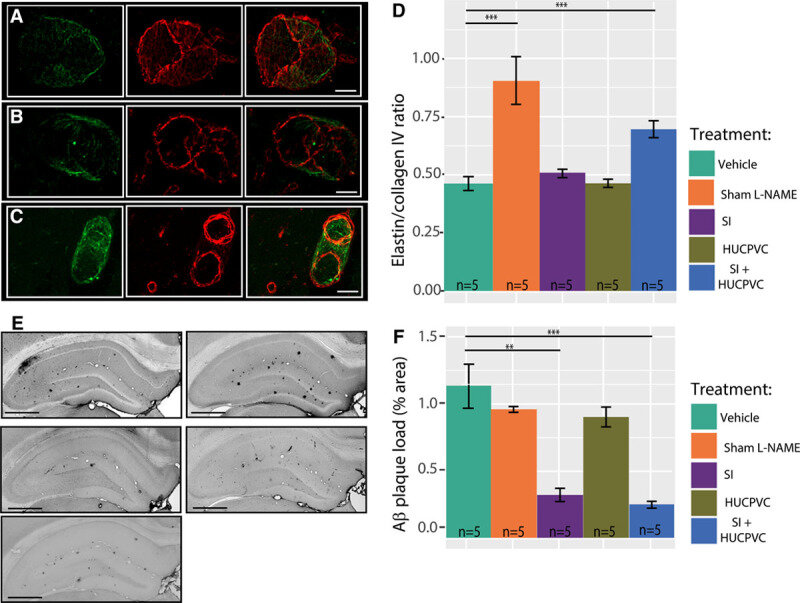
In Vivo Neurovascular Response to Focused Photoactivation of Channelrhodopsin-2
Abstract: We examined the neuronal and cerebrovascular responses to focused (raster-scan) and diffuse (fiber optic) photostimulation of channelrhodopsin in the Thy1-ChR2 mouse. Local field potentials (LFP) and two-photon microscopy of red blood cell (RBC) speed in penetrating vessels revealed ~40% larger LFP responses and twice as large cerebrovascular responses under focused vs. diffuse stimulation. Focused activation also doubled the signal-to-noise ratio of the vascular response, demonstrating clear advantages for optogenetics integrated into laser scanning microscopy platforms.
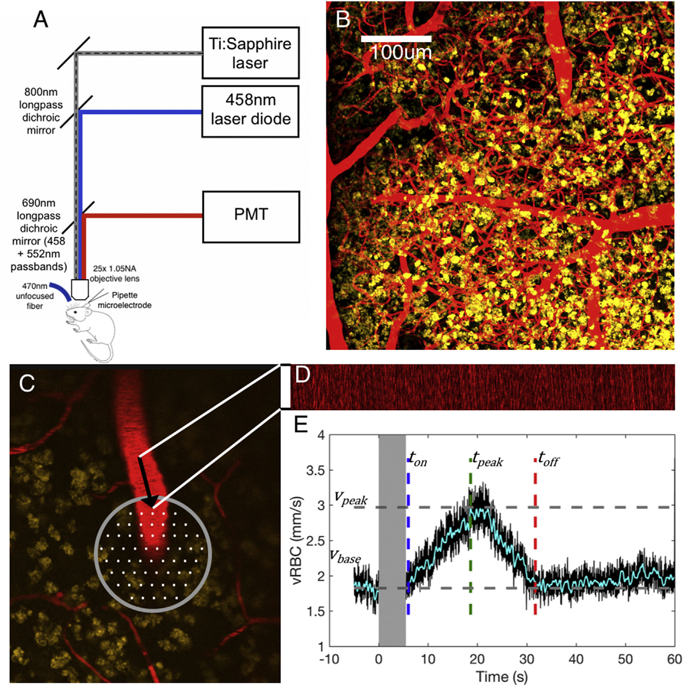
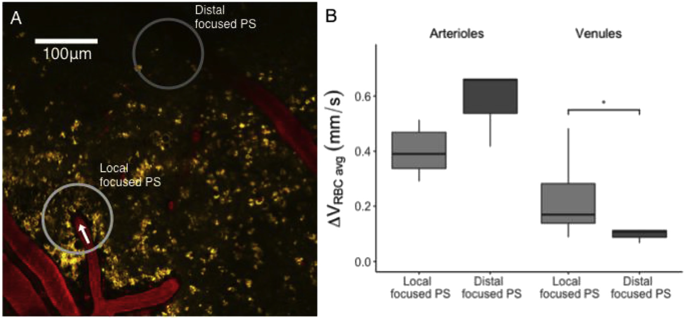
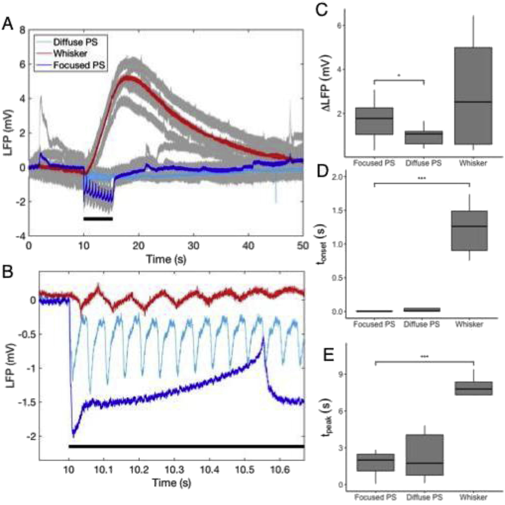
Refinement of a Chronic Cranial Window Implant in the Rat for Longitudinal In Vivo Two-Photon Fluorescence Microscopy of Neurovascular Function
Abstract: Longitudinal two-photon imaging in rats presents challenges due to wound healing craniotomy closure and inflammation. We refined a cranial window preparation using sterile surgical technique, precise tissue handling, customized window placement, and modified home cages. Immunohistochemical analysis using GFAP and Iba-1 showed activation of astrocytes and microglia immediately inferior to the window at one week, which resolved by four weeks. Patton windows remained clear for up to 14 weeks, enabling cell-resolution imaging up to 600 µm deep in rodent cortex.
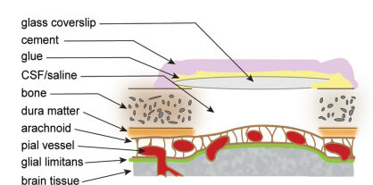
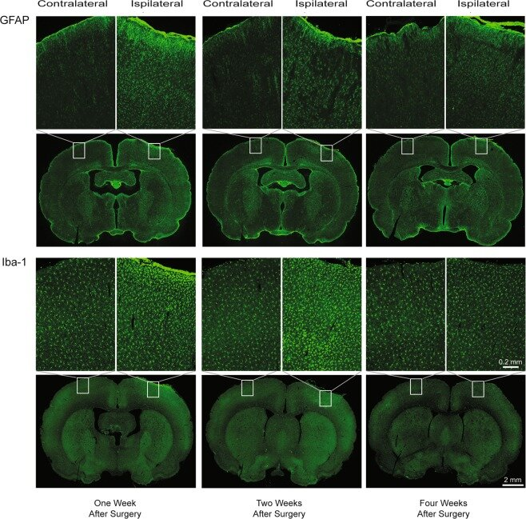
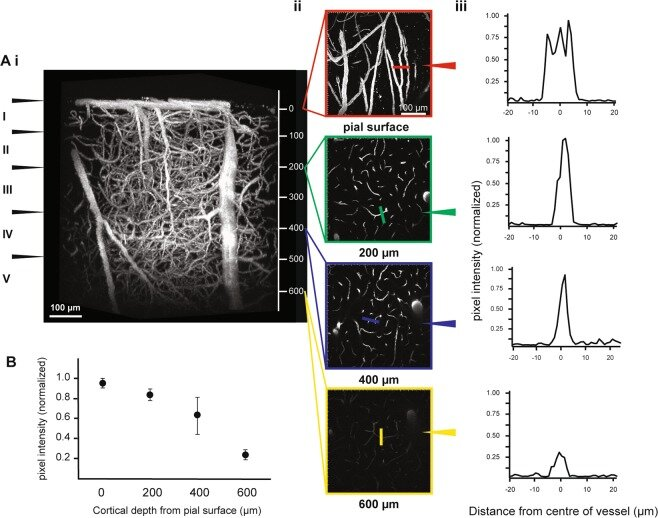
Societies & Conferences
We are active members of major international bioimaging and neuroscience societies.
View Society & Conference Affiliations